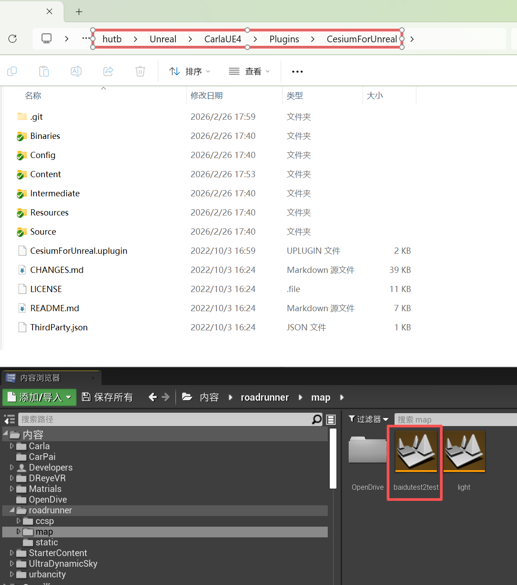
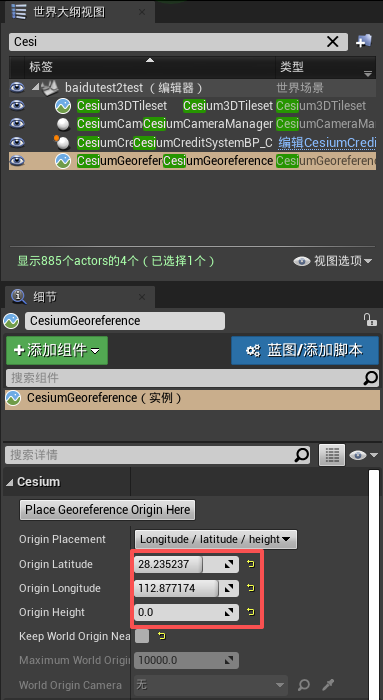

倾斜模型导入Carla
导入道路和红绿灯
0.将 链接 中的 software/cesium/RoadRunner插件.zip 解压到 hutb\Unreal\CarlaUE4\Plugins ，运行make launch重启编辑器。
1.在 hutb\Unreal\CarlaUE4\Content\roadrunner 中新建 static（放资产）和 map（放地图）；
在编辑器中static目录中右键导入 baidutest2test.fbx 。 导入选项： 勾选 纹理中 反转法线贴图 。
2.将 light.umap 拷贝到 hutb\Unreal\CarlaUE4\Content\roadrunner\map 路径下。
3.在虚幻编辑器中点“文件”菜单中的“将当前关卡另存为”（方便管理，把地图和红绿灯放一块），选择 hutb\Unreal\CarlaUE4\Content\roadrunner\map
4.将 light.umap 引入到 baidutest2test.umap（虚幻编辑器中点“窗口”菜单中的“关卡”，将内容浏览器中的 hutb\Unreal\CarlaUE4\Content\roadrunner\map\light 拖入到关卡窗口中 -> 右键light，修改流送方式->固定加载）。
5.将 hutb\Unreal\CarlaUE4\Content\Carla\Maps\OpenDrive\baidutest2test.xodr 拷贝到 hutb\Unreal\CarlaUE4\Content\roadrunner\map\OpenDrive\baidutest2test.xodr
倾斜模型导入 HUTB
1.下载并解压 Cesium for Unreal 插件 到插件目录hutb\Unreal\CarlaUE4\Plugins\CesiumForUnreal下：

注意
只有加载了 Cesium 插件后才能在内容浏览器中看到地图baidutest2test.umap。
2.如果CesiumForUnreal未启用，则在CarlaUE中添加插件

添加完成后重启引擎。
3.添加插件对象到场景中：

添加插件对象到场景中：
从世界大纲视图中选中CesiumGeoreference，其中，原点的纬度Origin Latitude、原点的经度Origin Longitude、原点的高度Origin Height分别设置为
：28.235238, 112.877178, 0

从世界大纲视图中选中Cesium3DTileset：
Source 设置为File:///D:/model1/model1/tileset.json。

注意
从链接 中的 map 文件夹内下载中电软件园_cesium_model.zip并解压。这里测试用的是本地路径，也可以用静态资源服务。
去掉 Keep World Origin Near Camear 勾选。
笔记
如果启用Keep World Origin Near Camear选项，在运行态下，世界坐标原点会随着镜头的变化而变化，从而导致所有的actor（非Geo对象）的坐标都产生变化。 一般建议在小场景下，关闭此选项。 该选项的目的是在大场景下，避免对象的坐标值很大，超过UE可以能够存储的精度。
（4.确定 Trees.umap 放到本地文件夹roadrunner/map下，菜单中点击 窗口->关卡 ，从 内容浏览器 中将 Trees.umap 拖进导弹出界面，然后右键 Trees ，选择 修改流送方法->固定加载 。）
（5.在世界大纲视图中选中 Cesium3DTileset ，将 Cesium 中的 Mobility 修改为 可移动 。）
（6.添加光源 定向光源(DirectionalLight) 、指数级高度雾(ExponentialHeightFog)、天空大气(SkyAtmosphere)、天光(SkyLight)。）
7.模型在CarlaUE中的场景效果

注意
在编辑器中如果运行时出现倾斜摄影模型部分不加载，则使用独立进程运行可全部加载。
倾斜摄影
由倾斜摄影osgb转换成3Dtiles格式（cesium可直接使用）。
导入中电软件园场景
1.从源代码编译Carla；
2.导入插件：roadrunner插件（包括RoadRunnerCarlaContent、RoadRunnerCarlaDatasmith、RoadRunnerCarlaIntegration、RoadRunnerDatasmith、RoadRunnerImporter、RoadRunnerMaterials、RoadRunnerRuntime）、Cesium插件；
3.导入 fbx 地图（导入选项都是默认），默认生成的地图是 Content/Carla/Maps/roadbuild ；
4.根据倾斜模型导入Carla的步骤添加除了建筑以外的其他资产；
5.导入自己设计的关卡：虚幻编辑器->窗口->关卡，从 内容浏览器 中将 langan.umap 、tafficsign.umap、Trees1.umap等关卡拖到弹出的 关卡 页面，并 右键每个关卡->修改流送方法->固定加载 ；
打包地图
1.参考 RoadRunner Scenario+CARLA联合仿真 进行地图打包。
2.将打包后场景的 WindowsNoEditor\CarlaUE4\Content\Carla\Maps\OpenDrive\baidutest2test.xodr 文件拷贝到 WindowsNoEditor\CarlaUE4\Content\RoadRunner\map\OpenDrive\baidutest2test.xodr ，否则调用client.get_trafficmanager(args.tm_port)会出现failed to generate map 的错误。
3.报警告WARNING: requested 30 vehicles, but could only find 0 spawn points，重新运行场景即可。
相对路径加载资产
1.在“世界大纲视图”中搜索 FbxScene_baidutest2test ，编辑编辑
2.事件开始运行
3.右键加一个“根目录”
4.右键“附加”（字符串-附件），由2个输入变成3个。其中 A 为: file:/// ，B 从根目录连接来，C 为: ccsp/tileset.json
cesium：
5.在左边“我的蓝图”中新建一个变量 Cesium3DTileset（cesium）， 右边“细节”中的“变量类型”改变为 Cesium3Dtiles
6.右键 获取 Cesium 3DTileset （组件 设置） 右边修改“默认值”（浏览）
7.连接到 SET url（设置 Url） Ceisium 3DTileset
问题：不可编辑类默认对象中的此值。
解决：将 Cesium3DTileset 拖动到不可编辑的地方（保存不了）。
报错：图表被连接到外部映射中的对象。
原因：蓝图中引用了外部的Cesium3DTileset。
选中交通灯，“细节”中的 BoxTrigger、TotalVolume起作用，调整缩放xy。
调出影响范围的函数
RoutePlanner证明路口和路是断开的
源代码分析
加载的逻辑位于 hutb\Unreal\CarlaUE4\Plugins\Marketplace\CesiumForUnreal\Source\CesiumRuntime\Private\Cesium3DTileset.cpp 中的：
this->_pTileset = MakeUnique<Cesium3DTilesSelection::Tileset>(
externals,
TCHAR_TO_UTF8(*this->Url),
options);
MakeUnique 使用给定的参数分配一个类型 T 的新对象并将其作为 TUniquePtr 返回。
TCHAR_TO_UTF8(const TCHAR*): unicode到utf8的转换
FAQ
# VS 2022 编译时 engine\Engine\Plugins\Marketplace\CesiumForUnreal\Source\ThirdParty\include\CesiumGeospatial\S2CellID.h 报错：error 2039: "string": 不是 "std" 的成员
原因：问题源于 VS2019 后的语法检查更加严格，缺少必要的头文件
解决：增加头文件：
#include<iostream>